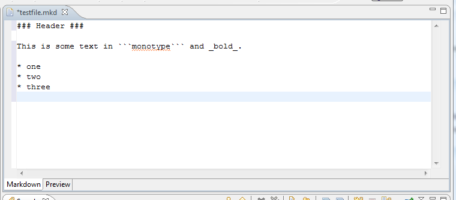
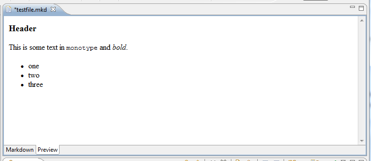

Edit Markdown File
Open the "New Markdown File Wizard" to create a new markdown file, which will open the markdown editor (shown below).

On the bottom of the editor there are two tabs, one for source and one for preview. The preview tab will display
a rendered version of the current content in the source editor, as shown below:

This allows you to preview the content as you write it. The stylesheet will be applied according to the value
specified in the preferences.